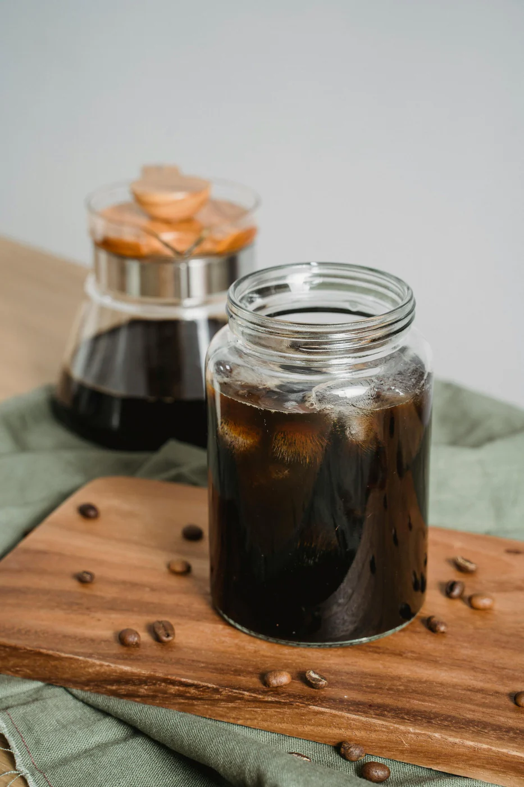
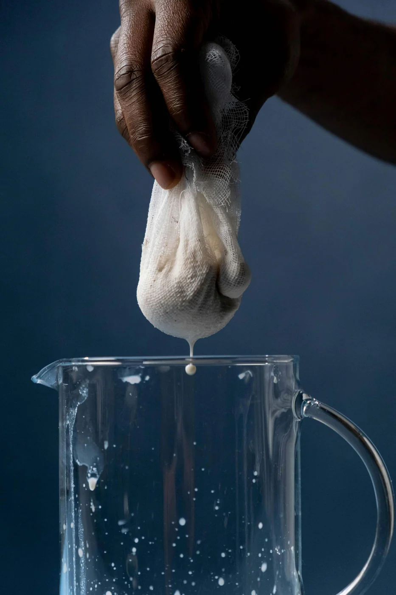
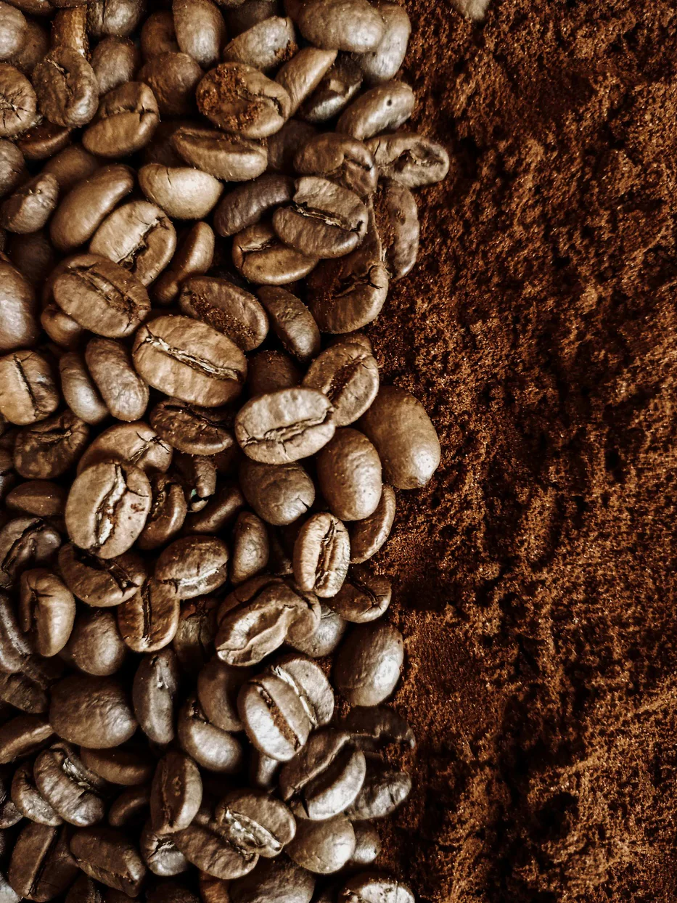
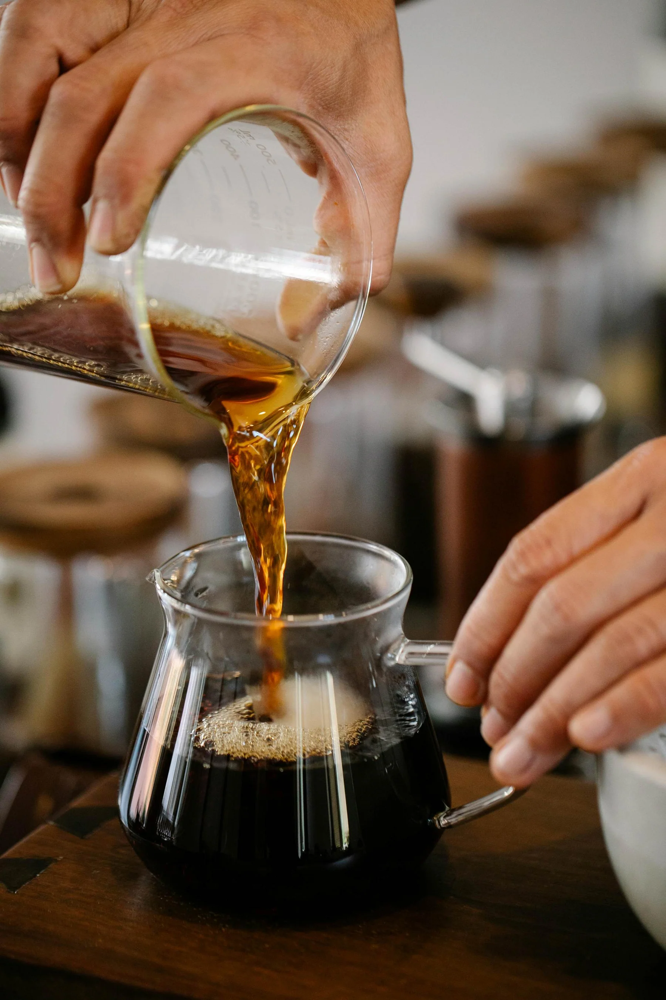
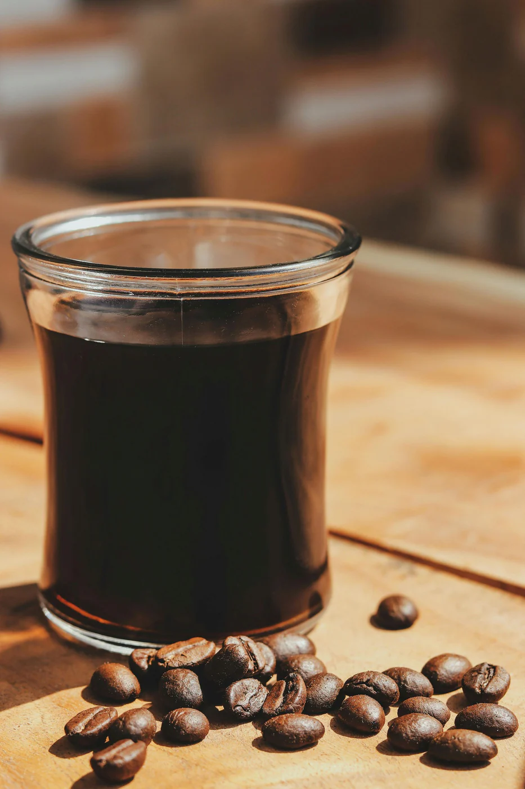

The Perfect Cold Brew
Cold brew has a reputation for being difficult. It isn't. The process is mostly waiting — but a few small decisions early on make the difference between smooth and bitter.

Cold brew has a reputation for being difficult to prepare. It actually isn't. The process is mostly just waiting — but a few small decisions made early on make a significant difference in the final cup.
The Grind
I use organic whole bean coffee and grind fresh every single batch. One thing I won't compromise on is grinding coarse. Too fine a grind and you're pulling bitter, acidic compounds into the concentrate. Cold brew is supposed to be smooth. A coarse grind slows down extraction and keeps it that way.
If your cold brew is coming out sharp or harsh, check the grind before you change anything else.

The Milk Bag
Forget about the French press, the paper filters, and the fancy cold brew towers. I use an unbleached, non-woven cotton milk bag — the same kind people use for oat milk or almond milk. Mine has a 90 × 88 weave, fine enough to catch the sediment that would otherwise make your concentrate murky.
The bag doubles as your strainer and your steeping vessel. Fill it, tie it off, drop it in the water like a giant tea bag. When the steep is done, pull it out and you already have your concentrate — no pouring through filters, no mess.
The key is to not squeeze. When you pull the bag, let it drip on its own. Hang it over the jar and give it about 10 minutes under gravity. Squeezing pushes bitter, over-extracted liquid through the weave and defeats the whole point. Patience here pays off in the cup.

The Process
Ingredients
- 4 cups organic whole bean coffee (~360g, medium roast)
- 4 cups cold water (filtered or sparkling)
Water quality matters more than people think. I use water filtered for heavy metals — keeps the flavor clean and neutral. I also like using carbonated water, which adds a subtle lift to the extraction. Either way, skip the tap water if you can.
Steeping
Once the bag is in the water, put the jar in the fridge and leave it alone.
Twenty-four hours is my standard. It produces a smooth, well-rounded concentrate with good body. If you want something richer, go to 48 — the flavor deepens without getting harsh. Don't push past that. There's a point of diminishing returns and then a cliff, and the cliff tastes bitter.

After the Steep
Pull the bag, hang it, let gravity work for 10 minutes, then discard the grounds. Coffee grounds are excellent for composting — high nitrogen, great for the garden.
What's left in the jar is your concentrate. Seal it and refrigerate. It'll keep for 3–6 weeks.
Serving
When you're ready to drink: one part concentrate, one part water. Pour over ice. Done. This diluted version stays fresh in the fridge for 3–4 days, so you can mix a few servings at the start of the week and not think about it again until Friday.
